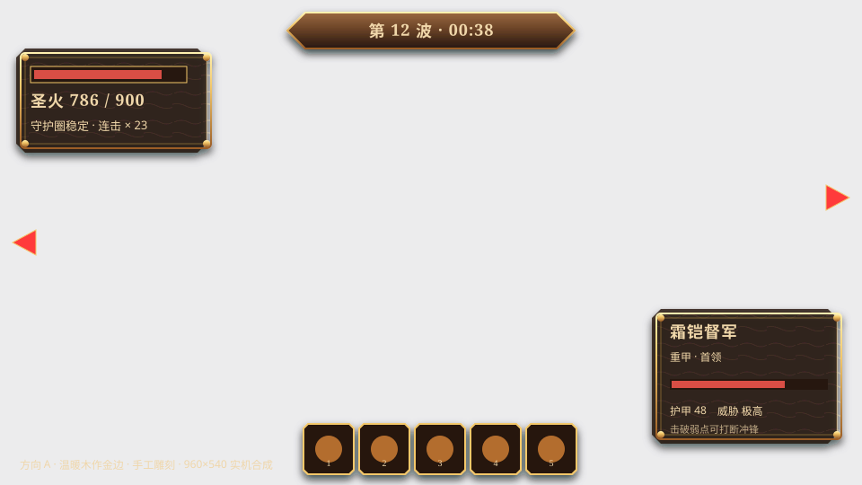
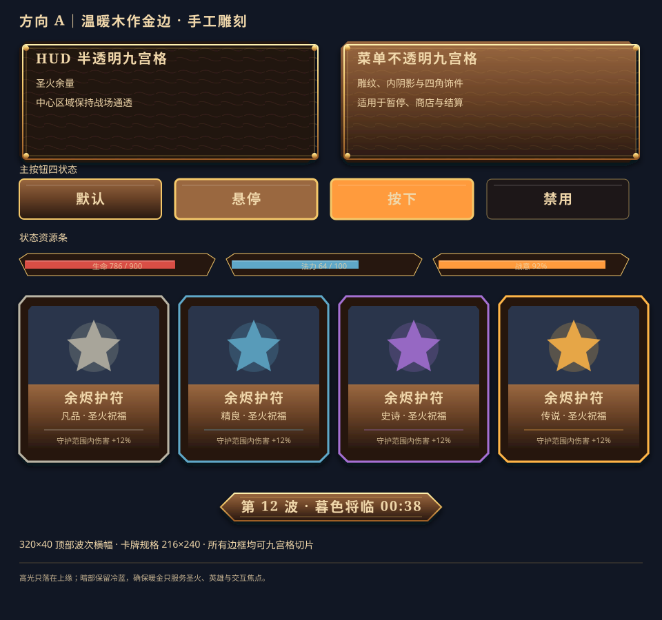
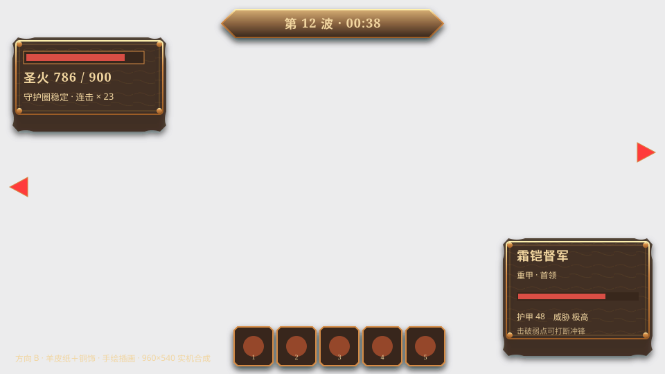
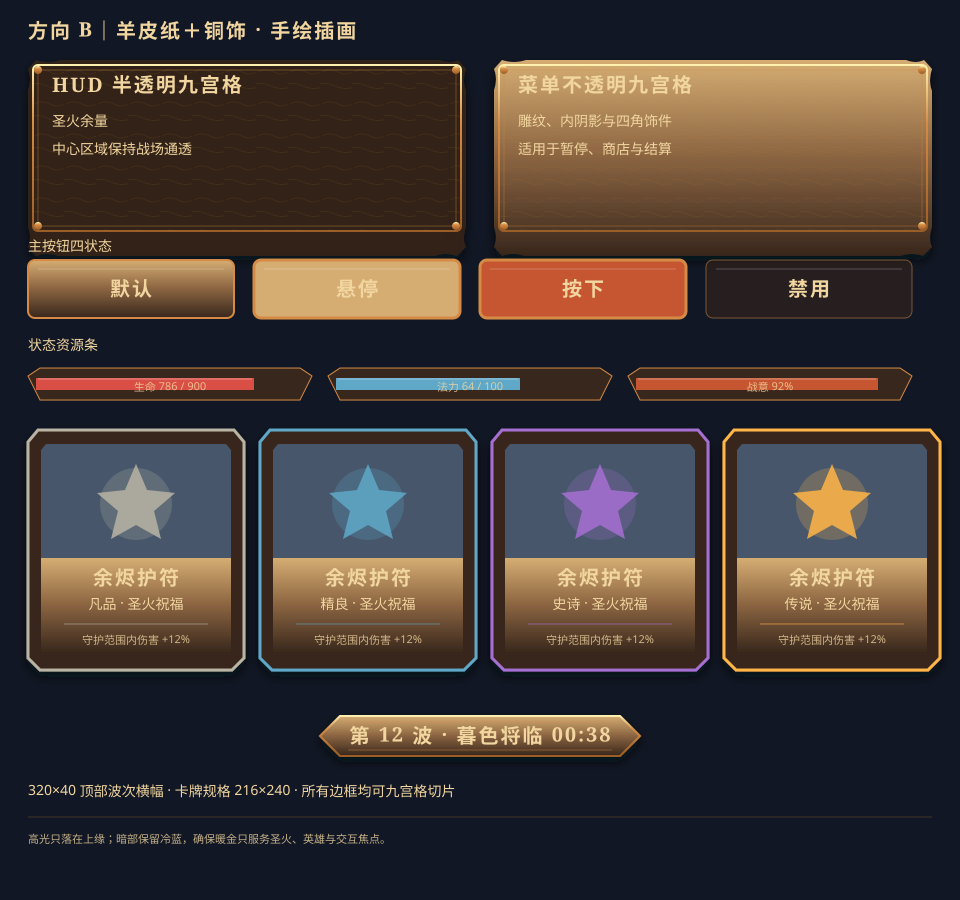
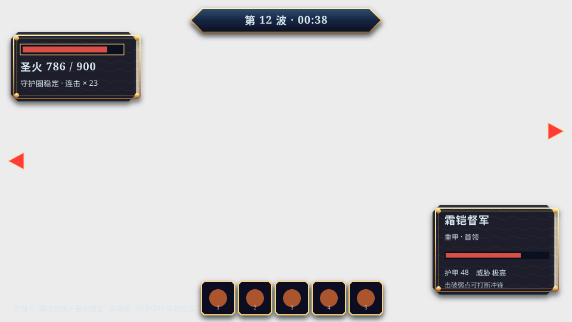
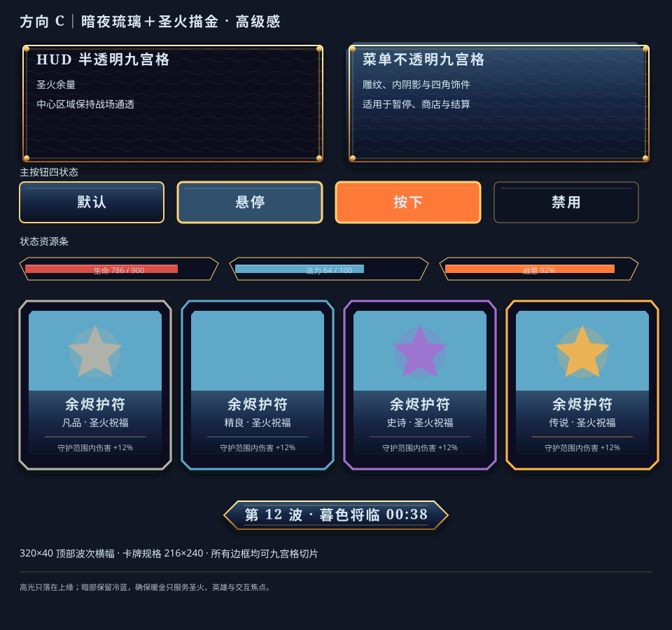

A｜温暖木作金边 · 手工雕刻
厚实木作、手工凿痕与暖金包边延续村落玩具感；层级最亲切、最贴合现有美术圣经。


B｜羊皮纸＋铜饰 · 手绘插画
不规则纸缘、铜质扣件与墨色插画区强化冒险手札气质；信息承载温和，适合商店与叙事。


C｜暗夜琉璃＋圣火描金 · 高级感
冷蓝半透琉璃以锐角切面收束战场，圣火金成为唯一高亮；夜战对比最强，整体最克制高级。


同一信息密度、同一 960×540 战斗底图、同一组部件横向盲测。每套均包含 HUD／菜单九宫格、按钮四态、四稀有度卡框、三资源条、波次横幅，以及 12 枚原创关键图标的 48px 与 128px 双档。
厚实木作、手工凿痕与暖金包边延续村落玩具感；层级最亲切、最贴合现有美术圣经。


不规则纸缘、铜质扣件与墨色插画区强化冒险手札气质；信息承载温和，适合商店与叙事。


冷蓝半透琉璃以锐角切面收束战场，圣火金成为唯一高亮；夜战对比最强，整体最克制高级。


注：本页是设计竞稿，不接入运行时代码。所有形状、纹样与图标均为本项目原创 SVG；概念底图仅位于 docs，不进入安装包。